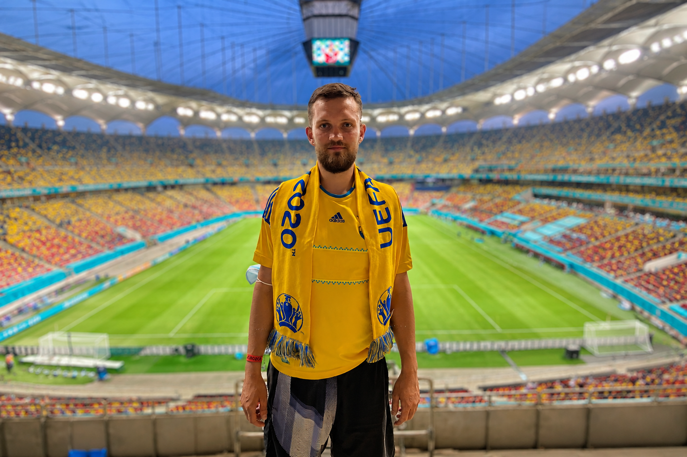
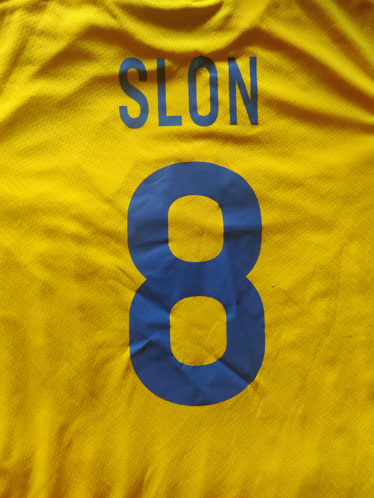
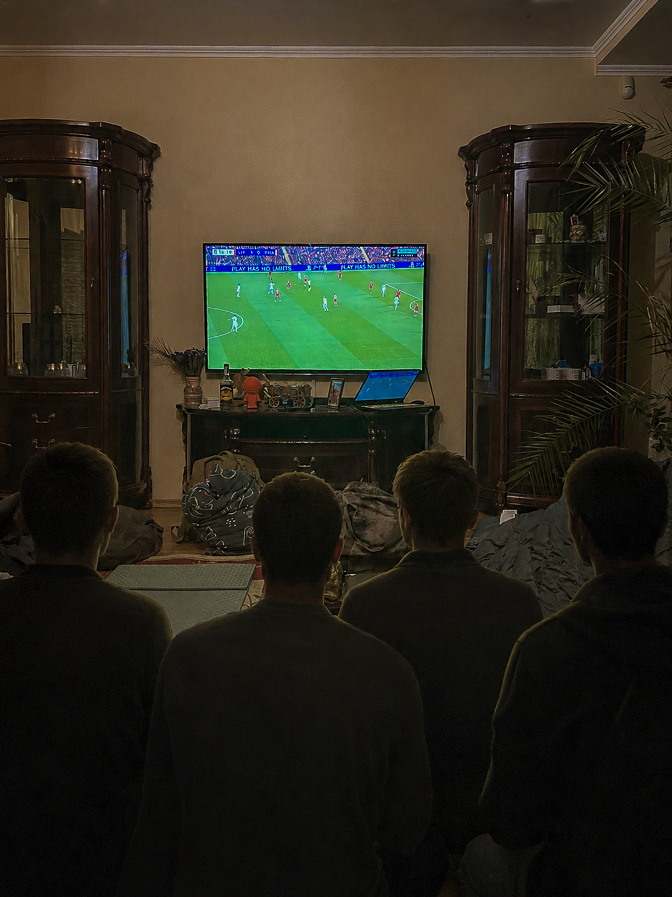
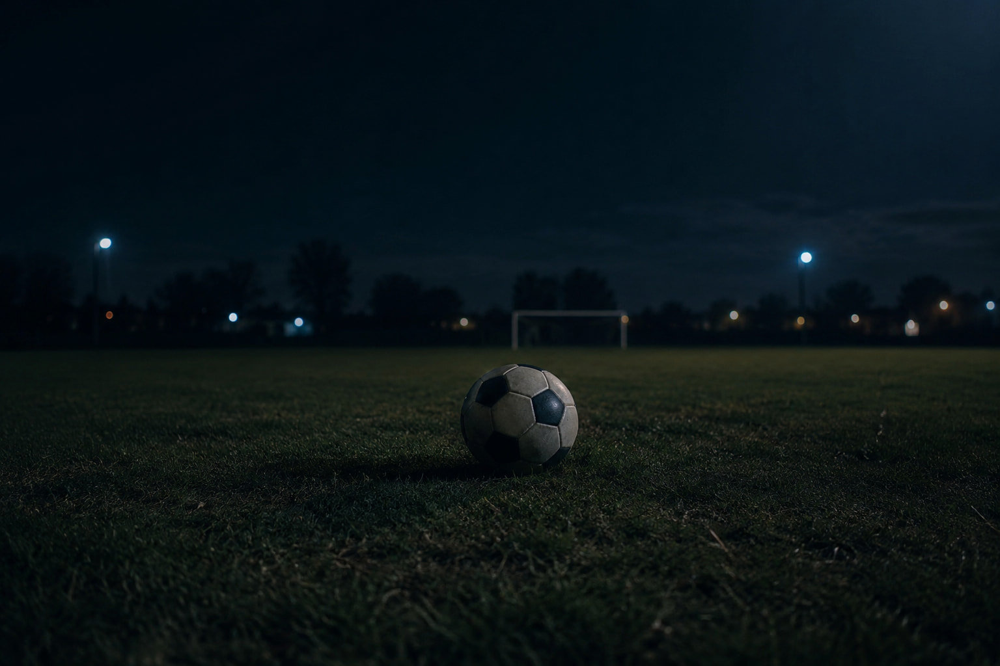

2012
Євро в Україні
Між боями, між поверненнями додому, між великими справами — він встигав ще одне життя. Те, де грає збірна, де друзі збираються біля екрана, де можна голосно радіти.
Ігор любив футбол так, як любив життя — щиро, голосно, без половинчастих емоцій. Це була не просто гра, на яку дивишся між справами. Це був ритуал: знайти ефір, зібрати друзів, домовитися, де зустрітися, написати в чат «починається». А коли збірна виходила на поле — Ігор був одним із тих, хто переживав кожен пас.
Батьки згадують, що ще зі шкільних років він з друзями встигав на двори, потім — на стадіонні екрани, потім — на матчі наживо. Він був із тих, хто запам'ятовує склади на пам'ять, сперечається про тренерські рішення і вірить у збірну навіть тоді, коли вірити складно.

Він міг прокинутися рано, відкласти всі справи, проїхати півкраїни — лише щоб подивитися матч із хлопцями. Для нього це не була розвага. Це було те, що тримало разом усіх його людей.
Друг, КПІ
Серед усіх турнірів була одна особлива любов — збірна України. Він вірив у неї так, як вірив у все інше: спокійно, переконано, без зайвих слів. І коли вона грала, Ігор був не вболівальником — він був своїм. Тим, кого вона представляла на полі.
У планах, які Ігор будував на після перемоги, футбол займав окреме місце. Він говорив про це наречена: подорожі мали йти за календарем матчів. Не туристичні маршрути диктували розклад — а розклад збірної диктував маршрути.
Головним його бажанням була наша перемога. Після неї планував багато подорожувати — підлаштовуючи маршрути так, щоб встигати на футбольні матчі.
Євгенія, наречена
Це були дрібні, прості мрії — але саме з таких речей складається людина. Сидіти на трибуні, кричати в один голос із незнайомими, бути частиною чогось більшого за себе. Він знав цю емоцію — і знав, що захищає її.


Друзі згадують: коли збірна виходила в чвертьфінал Євро-2020, Ігор писав у чат повідомлення довшими, ніж зазвичай. Він був з тих, хто не приховує радості — і не приховує болю, коли програють. Він жив це.
Серед усього, про що Ігор телефонував з передової, був футбол. Поряд із побутом, із побратимами, із короткими «у мене все ок» — обов'язково вкраплялося питання: «Ви матч дивилися?» І це не було відволіканням від реальності. Це був місток до неї — до тієї, нормальної, мирної, до якої він хотів повернутися.
Він міг подзвонити з окопу і запитати рахунок. Не як вболівальник — а ніби питав, чи вдома все на місці. Чи стоїть дім.
Батько
Для нього збірна, як і Київ, як і друзі, як і Євгенія — все це було тим самим домом. Тим, що тримає. Тим, заради чого варто було робити те, що він робив. І тим, що він хотів побачити неушкодженим — після перемоги.

У його телефоні, у блокнотах, у розмовах із Євгенією були списки. Куди поїхати після перемоги. Які матчі встигнути. Це не були мрії на «колись». Це були дати, до яких він готувався так, як готувалися б до зустрічі з кимось дорогим.
Ці списки не мають дат. Але мають вагу. Бо за кожним пунктом — людина, яка вірила, що так буде. Що Крим буде. Що збірна буде грати на своєму. Що з друзями вони поїдуть туди, де грає Україна, — і будуть кричати разом.
Друга частина цієї фрази — наша. Він її не казав. Але хто його знав, той знає: якби була перемога, він поїхав би на матч. На перший. І на наступний. І на всі наступні, доки б їх не побачив.
Тож коли збірна гратиме — згадайте.
Серед тих, хто хотів дивитися — був і Слон.
Дякуємо, Слон. Вічна пам'ять Герою.